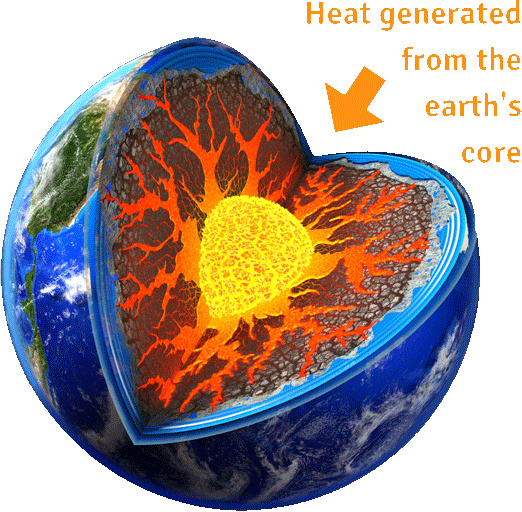

Познато е за изработка на електрична енергија. Исто така се користи директно за централно греење, или во други апликации за греење и ладење. Геотермалната енергија на Земјината кора достига 20% од оригиналното формирање на планетата, а 80% од радиоактивното распаѓање на минералите. Земјата е најжешко во неговото јадро и, од јадрото до површината, температурата постепено станува поладна.
Ресурсите на геотермалната енергија се движат од плитката почва до топла вода и жешка карпа на неколку милји или километри под површината на Земјата, и долу подлабоко до екстремно високите температури на стопената карпа наречена магма. Геотермалната енергија излегува како топла вода во многу топли извори или како пареа во гејзери.
Речиси насекаде, земјата на 3м под површината на Земјата одржува речиси постојана температура помеѓу 10 ° и 16 ° С. Геотермалните топлински пумпи можат да се сместат во овој ресурс за да се загреат и изладат згради. Геотермалниот систем за топлинска пумпа се состои од топлинска пумпа, систем за довод на воздух (канализација) и разменувач на топлина - систем на цевки погребан во плитката земја во близина на зградата. Во зима, топлинската пумпа користи енергија за да ја отстрани топлината од разменувачот на топлина и ја пумпа во системот за довод на воздух во затворените простории. Во текот на летото, процесот е обратен, а топлинската пумпа повторно ја користи власта за да ја придвижи топлината од внатрешниот воздух во разменувачот на топлина. Топлината отстранета од внатрешниот воздух во текот на летото, исто така, може да се користи за да се обезбеди слободен извор на топла вода. Моќноста за управување со топлинска пумпа доаѓа од друг извор.
Некои геотермални електрани ја користат пареата од резервоарот за да напојуваат турбина / генератор, додека други користат топла вода за да се вари работна течност што испарува, а потоа се претвора турбина. Топла вода во близина на површината на Земјата може да се користи директно за топлина. Апликациите за директна употреба вклучуваат греење згради, растенија растенија во стакленици, суши култури, греење вода во рибниците и неколку индустриски процеси, како што се пастеризирање млеко.